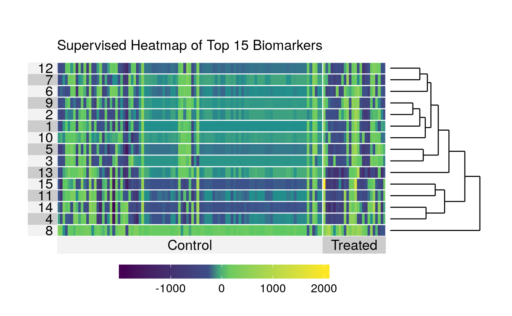

Heatmap of the contributions of a select subset of biomarkers to the variable importance measure changes as assessed by influence curve-based estimation, across all subjects.
heatmap_ic(x, ..., design, FDRcutoff = 0.05, top = 25)
| x | object of class |
|---|---|
| ... | additional arguments passed to |
| design | a vector providing the contrast to be displayed in the heatmap. |
| FDRcutoff | cutoff to be used in controlling the False Discovery Rate |
| top | number of identified biomarkers to plot in the heatmap |
heatmap (from the superheat package) using hierarchical clustering to plot the changes in the variable importance measure for all subjects across a specified top number of biomarkers.
library(dplyr) library(biotmleData) library(SummarizedExperiment) data(illuminaData) data(biomarkertmleOut) colData(illuminaData) <- colData(illuminaData) %>% data.frame %>% dplyr::mutate(age = as.numeric(age > median(age))) %>% DataFrame varInt_index <- which(names(colData(illuminaData)) %in% "benzene") designVar <- as.data.frame(colData(illuminaData))[, varInt_index] design <- as.numeric(designVar == max(designVar)) limmaTMLEout <- modtest_ic(biotmle = biomarkerTMLEout) heatmap_ic(x = limmaTMLEout, design = design, FDRcutoff = 0.05, top = 15)